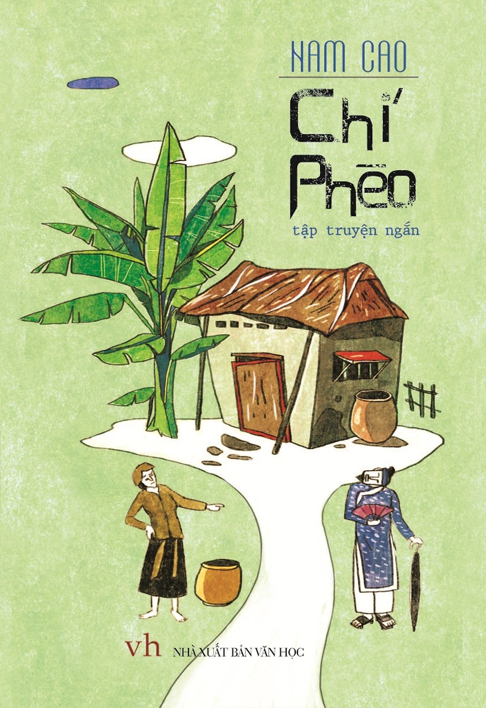
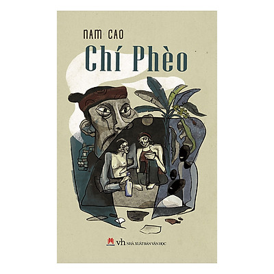
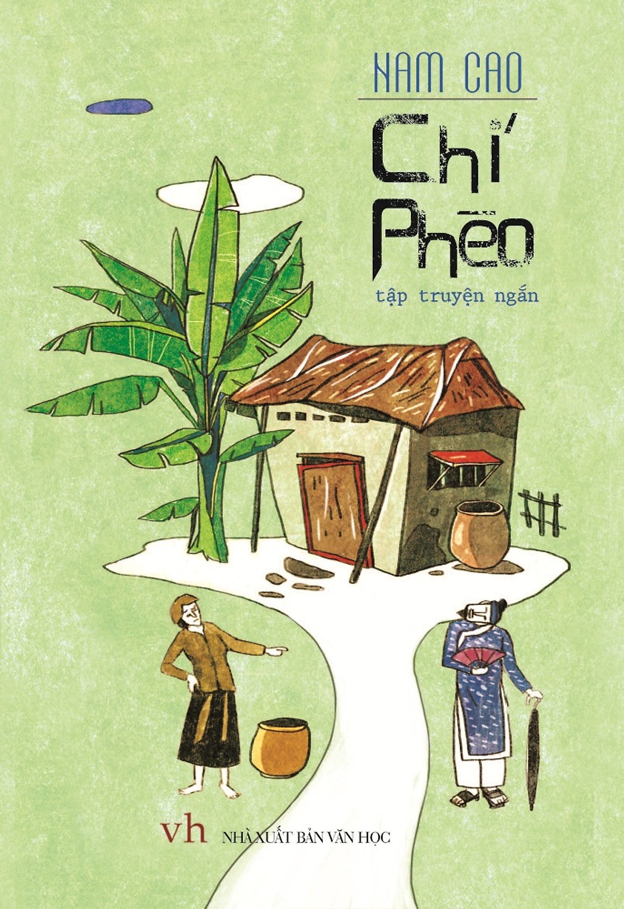
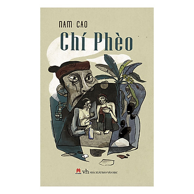

Book Price
$15.38
Chi Pheo
"Chi Pheo" is a Vietnamese tragicomedy play written by Nam Cao,
a prominent Vietnamese writer, and first published in 1941.
The play is widely regarded as a classic of Vietnamese literature
and has been adapted into various forms, including theater performances,
films, and television shows.
The story of "Chi Pheo" is set in a rural Vietnamese village and
revolves around the titular character, Chi Pheo, who is a poor,
elderly laborer. Chi Pheo is known for his witty sense of humor
and sharp tongue, which he uses to mask his deep-rooted pain and sorrow.
Despite his humorous facade, Chi Pheo is a tragic figure who has suffered
greatly in his life, including losing his wife and child, being deceived by
others, and facing injustice.
The play follows Chi Pheo's interactions with the people in his village,
including his friends, neighbors, and the village authorities.
Through their conversations and interactions, the play touches on various
social issues, such as poverty, class struggle, and corruption, which were
prevalent in Vietnamese society during the time period in which it was written.
Chi Pheo's humor and wit serve as a coping mechanism to deal with his hardships,
but as the story progresses, the audience begins to see the underlying sadness
and vulnerability beneath his facade. The play skillfully portrays the complexities
of human nature, showcasing the resilience, humor, and suffering that coexist in Chi Pheo's character.